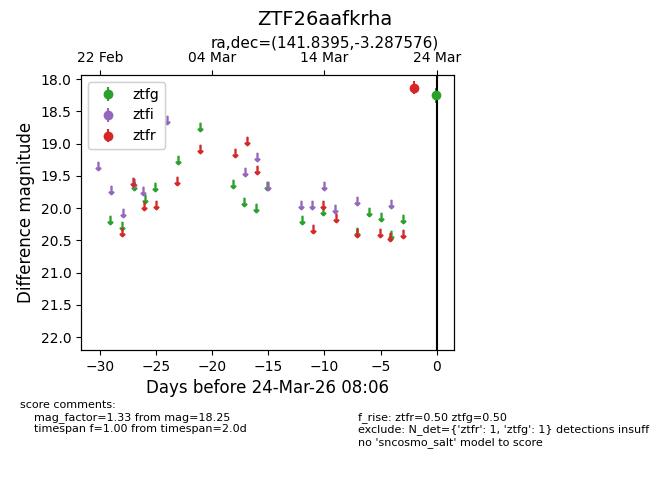
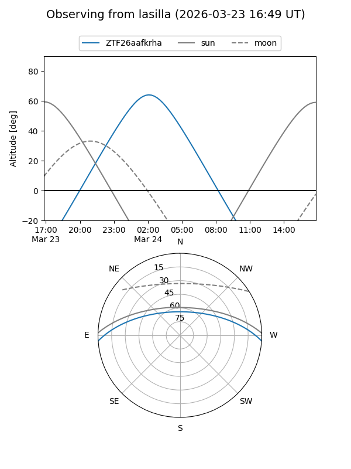
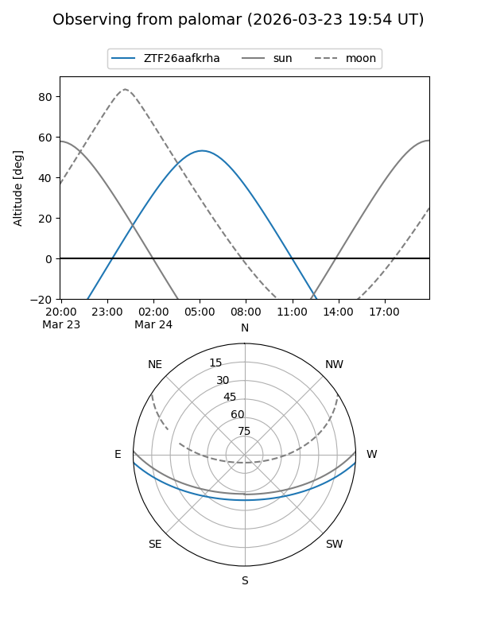

ZTF26aafkrha
Target ZTF26aafkrha at 2026-03-24 08:08
Aliases and brokers:
FINK: link
Lasair: link
ALeRCE: link
alt names
ZTF26aafkrha (ztf,fink_ztf)
Coordinates:
equatorial (ra, dec) = 141.8395,-3.28758
equatorial (HMS+DMS) = 09:27:21.49,-03:17:15.27
galactic (l, b) = (236.4289,+32.19320)
Flags:
Photometry:
last ztfg=18.25, ztfr=18.14
1 ztfg, 1 ztfr detections
Lightcurve

Visibility


Additional plots